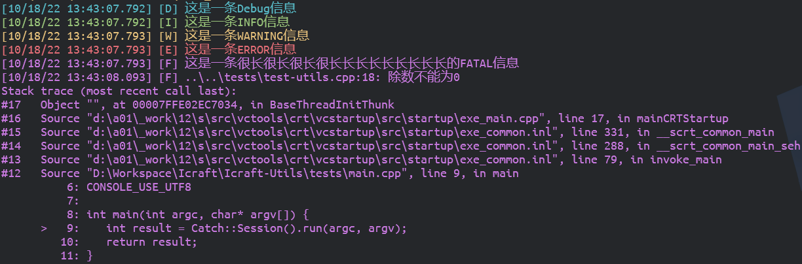
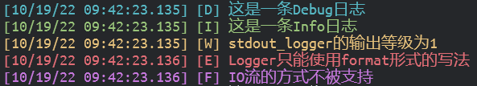
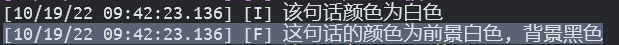
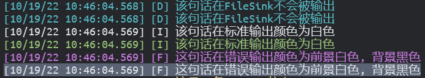
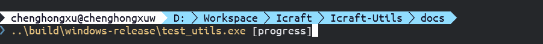

Icraft Utils#
Icraft Utils为Icraft各组件提供了一些通用的功能，目前包含以下功能：
日志记录
进度条生成
一 背景#
Icraft组件越来越多，很多组件都需要命令行参数、记录日志和生成进度条等功能。原来这些功能都是各个组件独自实现，没有做到代码的复用，不利于维护和调试。另外不同组件实现的风格不统一，这样不利于形成统一的用户界面。因此，Icraft-Utils中统一实现了以上功能，提供了统一的风格和接口，减少了大家的开发和维护压力。
二 安装#
Icraft-Utils组件是一个纯头文件的C++库，因此只需要把它作为子模块，然后将其头文件路径添加到父模块的头文件搜索路径即可。
三 使用#
3.1 日志记录#
3.1.1 开箱即用的宏定义#
Icraft-Utils定义了LOG(level)宏来提供开箱即用的日志功能。level的级别和默认颜色如下所示：
level |
含义 |
颜色 |
|---|---|---|
|
调试 |
蓝色 |
|
信息 |
青色 |
|
警告 |
黄色 |
|
错误 |
红色 |
|
致命 |
品红 |
|
异常 |
N/A |
备注
其中， DEBUG 到 FATAL 都输出到标准输出(stdout)，而 EXCEPT 则会抛出 icraft::InternalError 异常，需要用户捕获。
- 使用示例1:
1#include <icraft-utils/logging.hpp>
2... ...
3LOG(DEBUG) << "这是一条Debug信息";
4LOG(INFO) << "这是一条INFO信息";
5LOG(WARNING) << "这是一条WARNING信息";
6LOG(ERROR) << "这是一条ERROR信息";
7LOG(FATAL) << "这是一条很长很长很长很长长长长长长长长长的FATAL信息";
8
9try {
10 LOG(EXCEPT) << "除数不能为0";
11}
12catch (const std::exception& err) {
13 LOG(FATAL) << err.what();
14}
以上示例的输出效果如下图所示：

以上示例使用的是IO流式的方式来记录日志，Icraft-Utils的日志还支持采用format的方式来记录，只需要调用 append 方法。
另外，为了方便捕捉 LOG(EXCEPT) 抛出的异常，Icraft-Utils提供了 ICRAFT_TRY 的宏。
- 使用示例2:
1#include <icraft-utils/logging.hpp>
2... ...
3LOG(DEBUG).append("这是一条Debug信息");
4LOG(INFO).append("这是一条{}信息", "INFO");
5LOG(WARNING).append("这是一条").append("WARNING信息");
6LOG(ERROR).append("这是一条") << "ERROR信息";
7(LOG(FATAL) << "这是一条很长很长很长很长").append("长长长长长长长长的{}信息", "FATAL");
8
9ICRAFT_TRY(
10 LOG(EXCEPT).append("除数不能为{}", 0);
11);
以上示例的输出和示例1完全相同。
3.1.2 正确配置以获取详细调用栈#
如上所示， LOG(EXCEPT) 抛出的 icraft::InternalError 异常携带调用栈的信息，方便追溯问题所在的位置。但是默认情况下，Visual Studio和CMake的Relase模式不包含Debug信息，需要对编译和链接参数进行调整。
Windows#
当使用Visual Studio的编译器(cl)编译Windows平台的程序时，需要对工程属性做以下参数设置：
C/C++: 设置
Debug Information Format为/ZiLinker/General: 设置
Enable Incremental Linking为NoLinker/Debugging: 设置
Generate Debug Info为YesLinker/Optimization: 设置
References为/OPT:REF,Enable COMDAT Folding为/OPT:ICF
如果使用CMake构建工程，可以在CMakeLists.txt添加以下代码:
1add_compile_options("$<$<C_COMPILER_ID:MSVC>:/Zi>")
2add_compile_options("$<$<CXX_COMPILER_ID:MSVC>:/Zi>")
3add_link_options("$<$<C_COMPILER_ID:MSVC>:/INCREMENTAL:NO>")
4add_link_options("$<$<CXX_COMPILER_ID:MSVC>:/INCREMENTAL:NO>")
5add_link_options("$<$<C_COMPILER_ID:MSVC>:/DEBUG>")
6add_link_options("$<$<CXX_COMPILER_ID:MSVC>:/DEBUG>")
7add_link_options("$<$<C_COMPILER_ID:MSVC>:/OPT:REF>")
8add_link_options("$<$<CXX_COMPILER_ID:MSVC>:/OPT:REF>")
9add_link_options("$<$<C_COMPILER_ID:MSVC>:/OPT:ICF>")
10add_link_options("$<$<CXX_COMPILER_ID:MSVC>:/OPT:ICF>")
警告
以上代码在CMake v3.20上测试通过，低版本的CMake可能不兼容。
Linux#
当使用gcc/clang编译Linux的程序时，可以在编译选项中添加 -g 选项来生成Debug信息。
Linux下还需要 libbfd 来提供Debug信息的读取功能，在Ubuntu下，可以通过以下命令安装：
1sudo apt install binutils-dev
由于 libbfd 是动态加载的，因此还需要依赖 libdl ，所以需要指定链接库： -lbfd -dl
3.1.2 自定义Logger#
1. 基本用法#
除了使用上文所介绍的 LOG(level) 宏来记录日志以外，用户还可以自建 icraft::Logger (Class Logger)实例。 icraft::Logger 对象需要绑定一个或多个 icraft::BasicSink 的, 每个表示不同的输出通道。目前Icraft-Utils中实现的Sink有以下几个:
icraft::StdoutSink(Class StdoutSink): 表示标准输出icraft::StderrSink(Class StderrSink): 表示错误输出icraft::FileSink(Class FileSink): 表示输出到文件
icraft::Logger 提供了 debug , info , warn , error , fatal 等方法来支持不同等级的日志输出，这些方法只支持format方式地使用。
- 使用示例3:
1//实例化标准输出的Sink
2auto stdout_sink = icraft::StdoutSink();
3//使用该Sink构造一个Logger
4auto stdout_logger = icraft::Logger("stdout", stdout_sink);
5//下面是不同等级的日志
6stdout_logger.debug("这是一条Debug日志");
7stdout_logger.info("这是一条{}日志", "Info");
8stdout_logger.warn("stdout_logger的输出等级为{}", static_cast<int>(stdout_logger.level()));
9stdout_logger.error("Logger只能使用format形式的写法");
10stdout_logger.fatal("IO流的方式不被支持");
以上示例的输出效果如下图所示：

2. 一些设置#
icraft::BasicSink 支持设置自己的输出格式、输出等级和输出颜色。而Logger也支持设置输出格式和输出等级 。
- 输出格式定义了日志信息的排版
默认的格式字符串为
%^[%D %T.%e] [%L] %v%$其表示的意义为：
{颜色开始}[MM/DD/YY hh:mm:ss.ms] [日志等级(缩写)] 日志信息{颜色结束}具体的格式字符串请参考 自定义格式。
输出等级定义了日志输出的最低等级，高于或等于该等级的日志信息才能被输出。
输出颜色可以定义在终端输出时每个等级的颜色，颜色的范围则是ANSI Color的标准8色。
- 使用示例4:
1//实例化标准输出的Sink
2auto stdout_sink = icraft::StdoutSink();
3//使用该Sink构造一个Logger
4auto stdout_logger = icraft::Logger("stdout", stdout_sink);
5//将该Sink的INFO等级的输出颜色改为白色
6stdout_sink.setColor(LogLevel::INFO, LogColor::Foregroud(ColorName::WHITE));
7//将该Sink的FATAL等级的输出颜色改为前景红色，背景黑色
8stdout_sink.setColor(LogLevel::FATAL, LogColor(ColorName::WHITE, ColorName::BLACK));
9//设置Logger的输出等级为INFO，高于等于该等级的日志才会被输出
10stdout_logger.setLevel(LogLevel::INFO);
11//DEBUG等级低于INFO，不会输出
12stdout_logger.debug("该句话不会被输出");
13//INFO等级被改为白色
14stdout_logger.info("该句话颜色为白色");
15//FATAL等级被改为前景白色，背景黑色
16stdout_logger.fatal("这句话的颜色为前景{}, 背景{}", "白色", "黑色");
以上示例的输出效果如下图所示：

2. 多个Sink#
icraft::Logger 可以绑定多个Sink，每个Sink可以单独设置输出格式，输出等级和输出颜色。
- 使用示例5:
1//实例化标准输出的Sink
2auto stdout_sink = icraft::StdoutSink();
3//实例化错误输出的Sink
4auto stderr_sink = icraft::StderrSink();
5//实例化FileSink
6auto file_sink = icraft::FileSink("./logging.txt");
7//前以上Sink构造一个Logger
8auto multi_sink_logger = icraft::Logger("stdout", { stdout_sink, stderr_sink, file_sink });
9//将该stdout_sink的INFO等级的输出颜色改为白色
10stdout_sink.setColor(LogLevel::INFO, LogColor::Foregroud
11(ColorName::WHITE));
12//将该stderr_sink的FATAL等级的输出颜色改为前景红色，背景黑色
13stderr_sink.setColor(LogLevel::FATAL, LogColor(ColorName::WHITE, ColorName::BLACK));
14//修改file_sink的输出格式
15file_sink.setPattern(">>>>>[%D %T] [%n]-[%L] %v<<<<<");
16//设置file_sink的输出等级为INFO
17file_sink.setLevel(LogLevel::INFO);
18//DEBUG等级低于INFO，不会输出
19multi_sink_logger.debug("该句话在FileSink不会被输出");
20//INFO等级被改为白色
21multi_sink_logger.info("该句话在标准输出颜色为白色");
22//FATAL等级被改为前景白色，背景黑色
23multi_sink_logger.fatal("这句话在错误输出颜色为前景{}, 背景{}", "白色", "黑色");
以上示例的输出效果如下图所示：

而日志文件 logging.txt 中内容为：
$ cat ./logging.txt
>>>>>[10/19/22 10:45:03] [stdout]-[I] 该句话在标准输出颜色为白色<<<<<
>>>>>[10/19/22 10:45:03] [stdout]-[F] 这句话在错误输出颜色为前景白色, 背景黑色<<<<<
3.2 进度条生成#
icraft::ProgressBar 表示单个进度条，一个进度条的结构如下所示：
{prefix} {start} {fill} {lead} {remaining} {end} {percentage} [{elapsed}<{remaining}] {postfix}
^^^^^^^^^^^^^ Bar Width ^^^^^^^^^^^^^^^
进度条的进度是在[0, 100]的范围内的浮点数，当进度达到100时，表示进度完成。
用户可以调用 Class ProgressBar 的相应方法来设置相应的属性，进度的设置可以使用 bar.setProgress(float) 来直接指定进度值，也可以使用 bar.tick(float) 来指定进度前进了多少，或者使用 bar.tick() 来表示前进1。
- 使用示例6:
1//实例化进度条
2 auto bar = ProgressBar();
3//设置进度条前缀
4bar.setPrefixText("Trying ");
5//设置进度条后缀
6bar.setPostfixText(" Done!");
7//显示消耗时间
8bar.showElapsedTime(true);
9//显示剩余时间
10bar.showRemainingTime(true);
11auto progress = 0.0f;
12while (true) {
13 bar.setProgress(progress);
14 progress += 0.25f;
15 //进度过程中可以正常打印日志
16 if(progress == 50) LOG(WARNING) << "当前进度已经过半";
17 if (bar.isCompleted()) {
18 break;
19 }
20 std::this_thread::sleep_for(std::chrono::milliseconds(5));
21}
以上示例的输出效果如下图所示：

icraft::DynamicProgressBars 能够支持多个进度条的动态添加。
- 使用示例7:
1#include <icraft-utils/progress.hpp>
2... ...
3//实例化进度条1
4ProgressBar bar1(ColorName::CYAN);
5bar1.showElapsedTime(true);
6bar1.showRemainingTime(true);
7bar1.setPrefixText("Downloading ");
8//实例化进度条2
9ProgressBar bar2(ColorName::RED);
10bar2.setPrefixText("Quantizing ");
11//实例化进度条3
12ProgressBar bar3(ColorName::BLUE);
13bar3.setPrefixText("Running ");
14//使用bar1和bar2构造动态进度条
15DynamicProgressBars bars({ bar1, bar2 });
16//设置进度条完成时就隐藏
17//bars.hideBarWhenComplete(true);
18
19auto job1 = [&bars]() {
20 while (true) {
21 bars[0].tick();
22 if (bars[0].isCompleted()) {
23 bars[0].setPrefixText("Download Completed!");
24 bars[0].markAsCompleted();
25 break;
26 }
27 std::this_thread::sleep_for(std::chrono::milliseconds(50));
28 }
29};
30
31auto job3 = [&bars](size_t i) {
32 while (true) {
33 bars[i].tick(2);
34 if (bars[i].isCompleted()) {
35 bars[i].setPostfixText(" <<< Done!");
36 bars[i].markAsCompleted();
37 break;
38 }
39 std::this_thread::sleep_for(std::chrono::milliseconds(30));
40 }
41};
42
43auto job2 = [&bars, &bar3, &job3]() {
44 for (int i = 0; i < 51; i++) {
45 bars[1].setProgress((float)(i + 1) * 100 / 51);
46 bars[1].setPostfixText(std::to_string(i + 1) + "/51");
47 std::this_thread::sleep_for(std::chrono::milliseconds(100));
48 }
49 bars[1].markAsCompleted();
50 //向动态进度条中添加bar3
51 auto i = bars.append(bar3);
52 std::thread third_job(job3, i);
53 third_job.join();
54};
55
56std::thread first_job(job1);
57std::thread second_job(job2);
58first_job.join();
59second_job.join();
60std::cout << termcolor::bold << termcolor::green << "✔ All is over!!!" << std::endl;
61std::cout << termcolor::reset;
以上示例的输出效果如下图所示：
如果把 bars.hideBarWhenComplete(true); 取消注释，则输出效果如下：